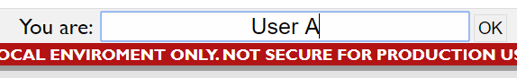

WebRTC fullmesh learning system
Warning
This system is built for learning purpose, and is supposed to only run locally. Not secure for production use on the internet. DO NOT USE FOR PRODUCTION.
About
WebRTC API is very useful for realtime communications between multiple endpoints. However, the handling of WebRTC API on browser side requires dealing with a lot of events which makes it harder to understand and implement, especially when connecting multiple endpoints. This system is aimed at helping understand the API by making these events visibly tracable by logs.
Running Enviroment
This system requires Docker,Web browser and an internet connected enviroment(for preparation)as running enviroment.
The tools for development are as follows:
OS
Windows 10
Docker
19.03.5
docker-compose
1.24.1
However, running on Debian 10, Chromium, Node.js v10 stack is also checked.
Running issues may be related to the older vereions of OS,Web brwoser, Docker.Try updating them when things dont work.
Preparation
Assuming you are at cloned repository directory from your terminal(or Command Prompt).
-
Install Docker
(If you are using Windows, make sure repository directory is shared with Docker. Make sharing available when disabled)
-
build Docker image. by running:
Docker-compose -f Docker-compose.run.yml build --no-cache
For Windows user, alternative command is:
prepare
Running
Assuming you are at cloned repository directory from your terminal(or Command Prompt).
-
run:
Docker-compose -f Docker-compose.run.yml run
For Windows user, alternative command is:
run
-
Open multiple browser(Chrome) windows, then access
localhost:8080
-
Type names and press OK.This process will connect each windows.

-
Check the connection by messaging.

-
Time to read logs and codes.

Stopping the system
- Stopping from termnal(or Command Prompt)
-
In your terminal, kindly press:
Ctrl+c
- If you have closed the terminal.
-
docker pswill show all the containers currently running. remember first few letters of the container id(first column)
docker ps ${id}replace ${id} with the remembered id letters.
Further readings
-
WebRTC API
-
chat sample